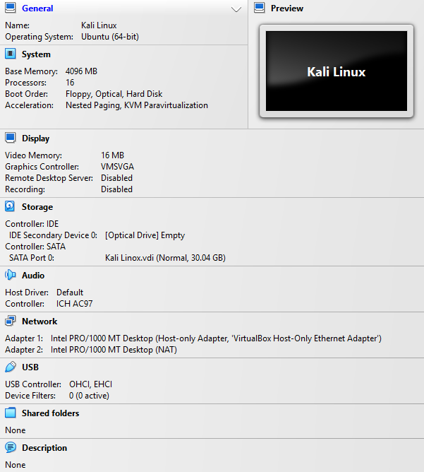
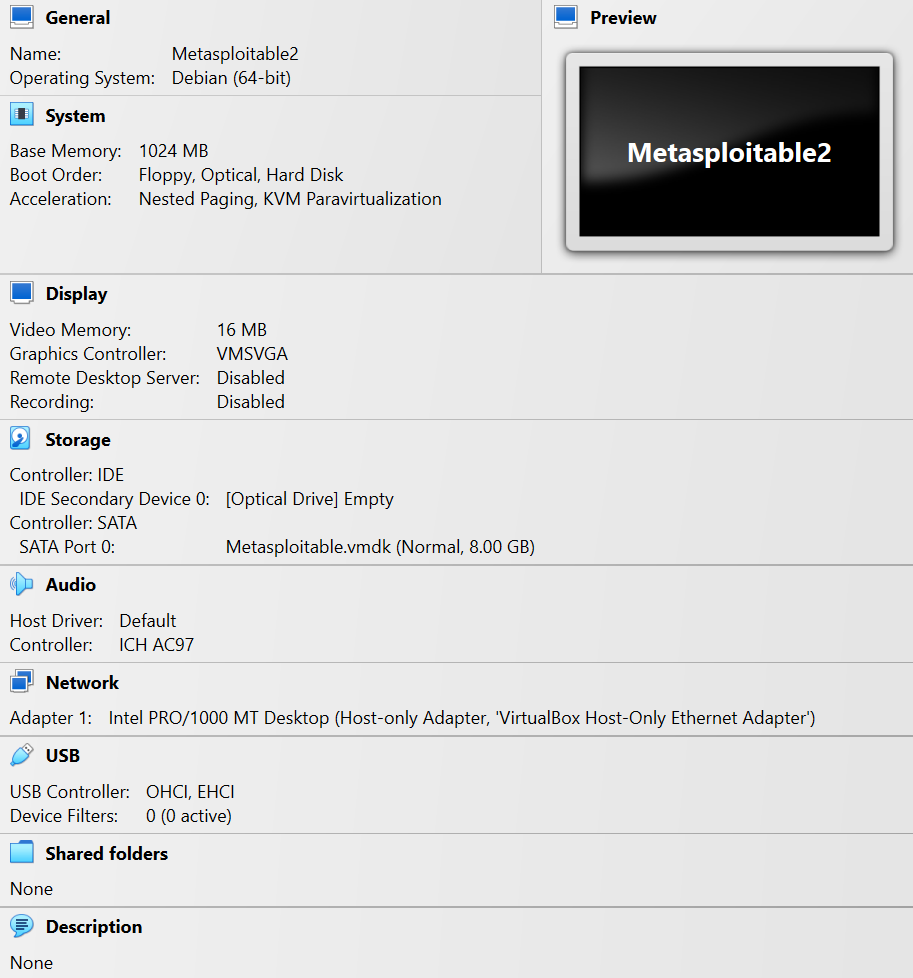
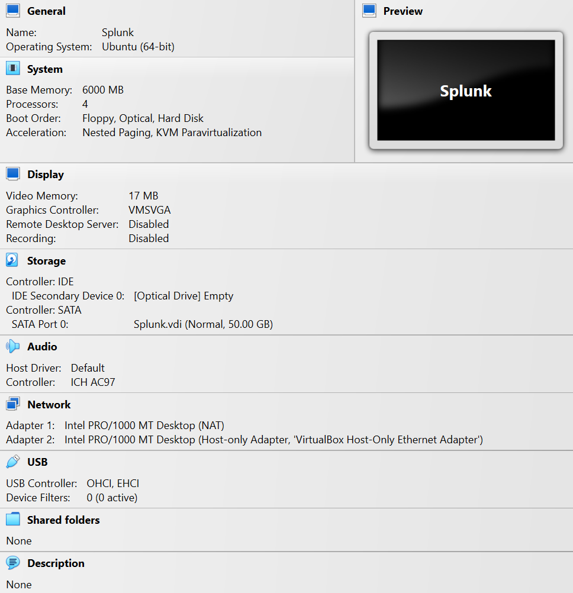

Lab Topology
The lab uses Kali Linux as the attacker VM, Metasploitable2 as the intentionally vulnerable target, and Ubuntu/Splunk as the SIEM VM where applicable. The environment is isolated in VirtualBox and used only for controlled learning and documentation.


